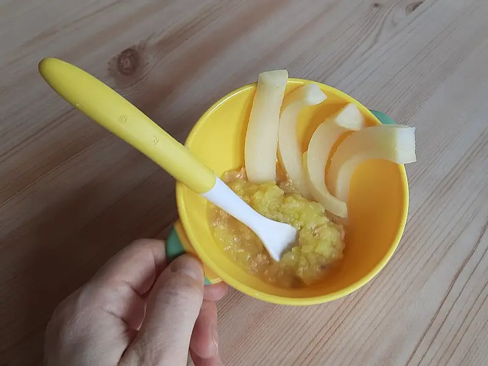

Фото: MAKY.OREL, CC0

Пюре из кабачка и цветной капусты
Нежное овощное пюре на пару для малыша от года
25 мин2 порц.46 ккал на порциюБ 2 · Ж 1 · У 8Интернациональная кухня
Продукты на 2 порц.
- Кабачок1 шт
- Цветная капуста150 г
- Вода50 мл
- Сливочное масло по желанию1 ч. л.
Как готовить
- Очистите кабачок от кожуры и семян, нарежьте кубиками по 2 см. Цветную капусту разберите на мелкие соцветия.
- Выложите овощи в пароварку или в дуршлаг над кипящей водой, накройте крышкой.
- Готовьте на среднем огне 15-18 минут, пока нож не будет входить в капусту без усилия.
- Переложите овощи в миску, добавьте 2-3 ст. л. воды из пароварки и измельчите блендером до гладкости.
- По желанию добавьте кусочек сливочного масла и перемешайте. Остудите до тёплого.
Совет. Густоту регулируйте водой от варки: для малышей до 1,5 лет пюре должно быть совсем гладким, позже можно оставлять мелкие кусочки. Свежее пюре храните в холодильнике не больше суток.